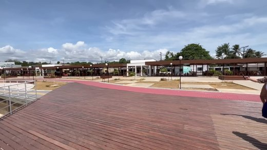

00:02:36.640
Deque de madeira e passeio amplo na orla da Fazendinha, diante das coberturas e mesas dos quiosques.
Orla da Fazendinha, Macapá (AP) · confirmado
O roteiro começa pela Fazendinha. Antes da montagem com música, o apresentador menciona a praia, a estrutura da orla e os restaurantes da região.
Transcrição · 00:02:06 | 00:02:14 | 00:02:22 | 00:02:27
Turismo Aqui — quadro de vídeo publicado no YouTube
Referência 1